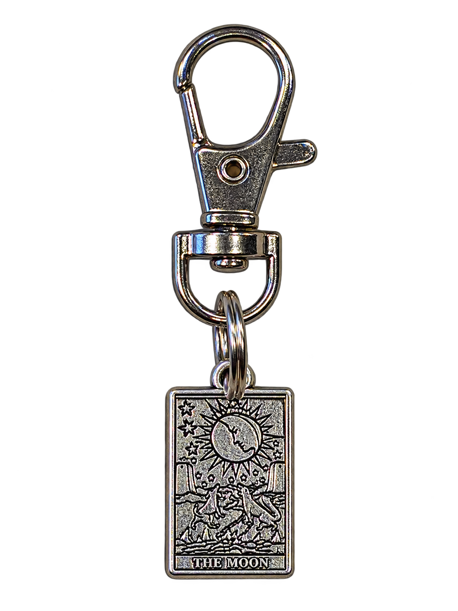
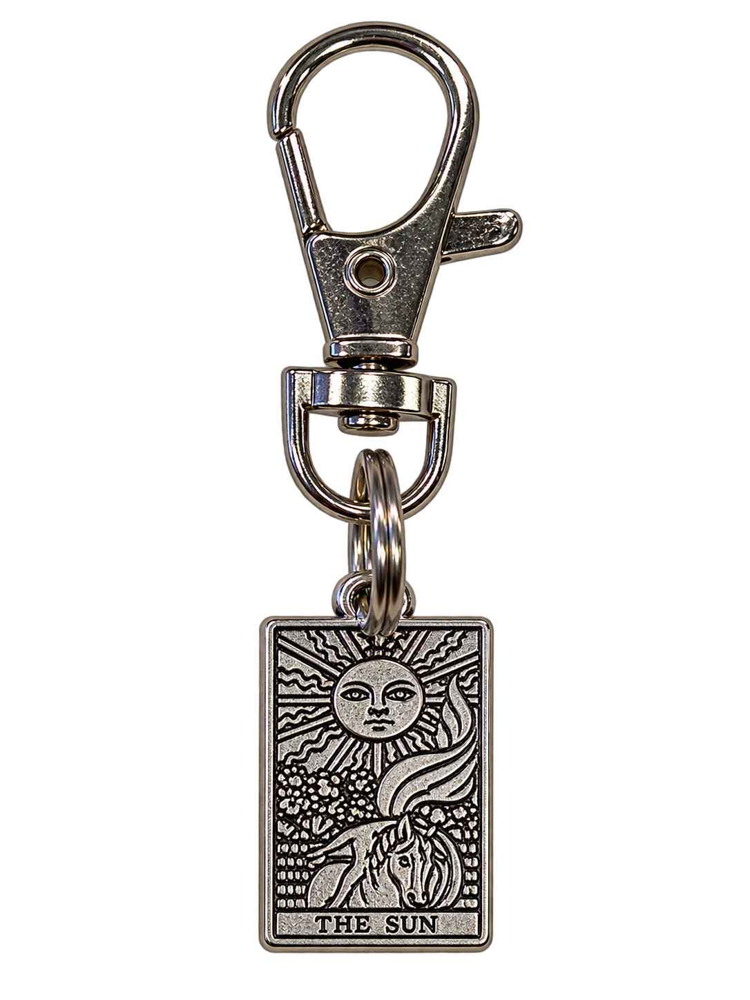
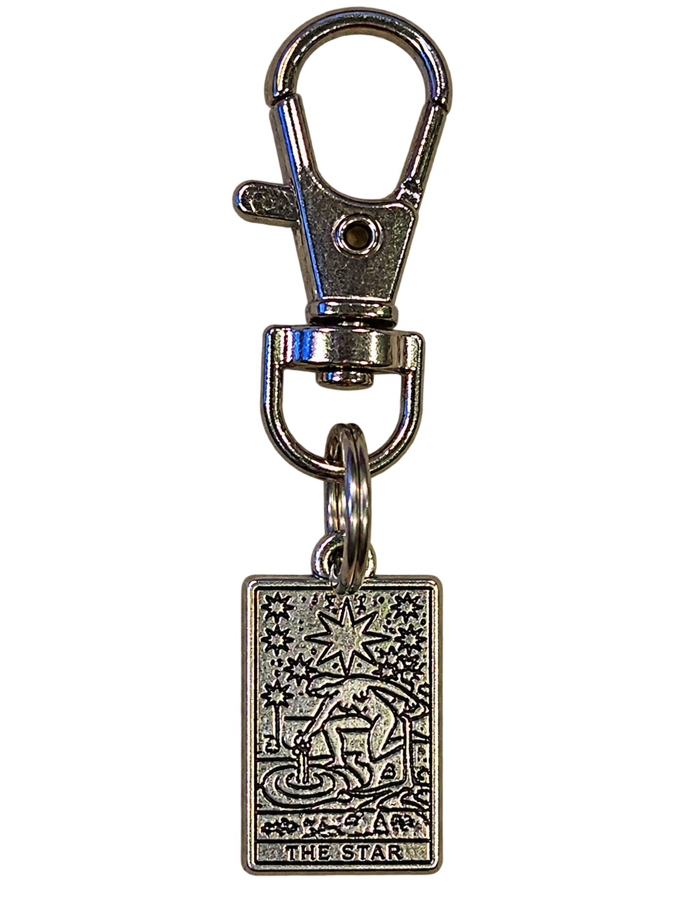
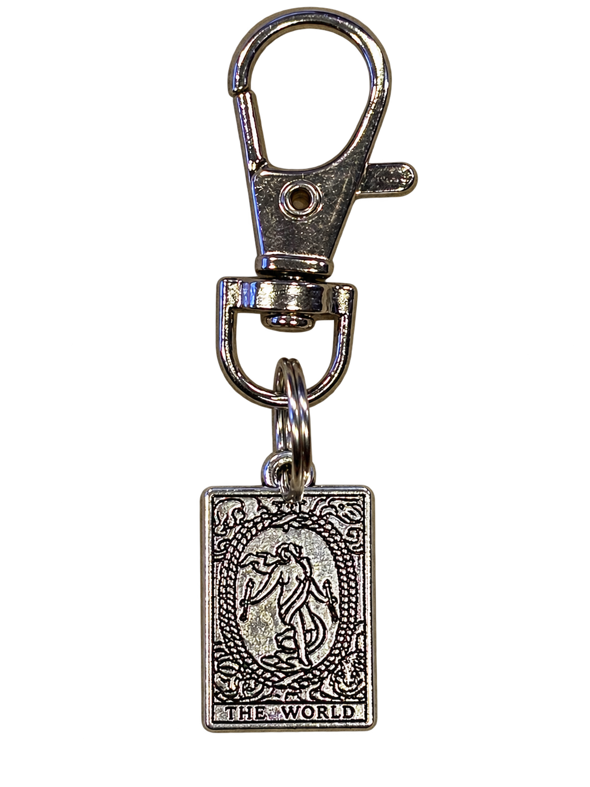
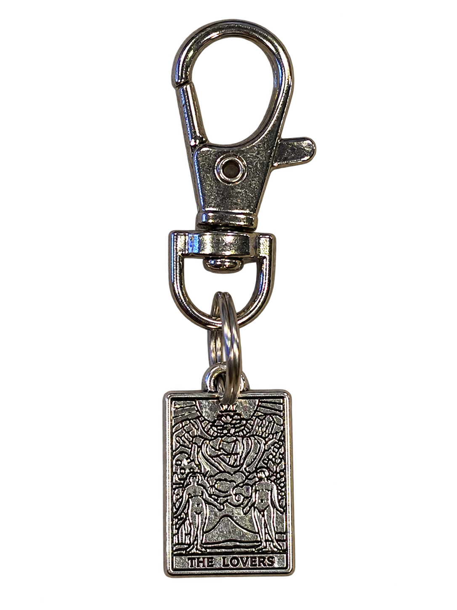
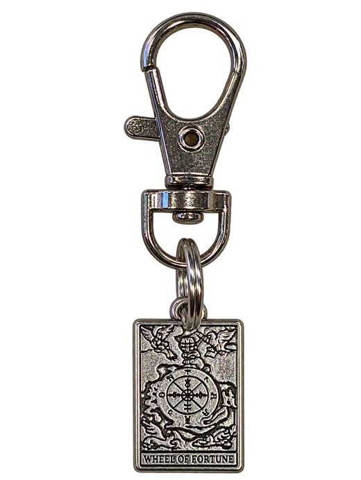

The Moon
Intuition · Illusion · Dreams
The Moon is the card of the in-between: twilight, dreams, and things that aren't quite what they seem. It invites you to trust your gut, even when the path ahead is hard to see. Under its soft light, fears and secrets surface, and the message is gentle but clear. Slow down, listen inward, and don't mistake shadows for the whole truth.
Few cards fit the Night Court better. Think of Rhysand's court of dreams, the hidden glamour of Velaris, and the way nothing in Prythian is ever as simple as it looks. Fae glamour, mind-walking, and the riddles and trials Feyre faces all play with illusion and instinct. If you drew the Moon, you may be a little bit of a night owl, and your intuition is probably sharper than you give it credit for.
Next card ↓
The Sun
Joy · Vitality · Clarity
The Sun is one of the happiest cards in the deck. It stands for warmth, success, and the feeling of stepping out of a long winter into bright, honest daylight. Where the Moon asks questions, the Sun gives answers. It celebrates confidence, playfulness, and the simple joy of being fully seen as you are.
Head for the Day Court, ruled by Helion, where knowledge and light go hand in hand, or to the sun-soaked shores of the Summer Court. It's also the exact feeling of Feyre finally stepping back into daylight after her darkest days Under the Mountain. If the Sun is yours, you bring the glow to every gathering, and you're probably the friend who makes everyone feel welcome.
Next card ↓
The Star
Hope · Healing · Renewal
The Star appears after the storm. It's the quiet exhale, the sense that things are going to be okay, and the card most tied to hope, healing, and inspiration. It asks you to have faith in yourself and the future, and to let yourself be restored. Small lights are still lights, and they're enough to find your way by.
Velaris, the City of Starlight, practically lives in this card, along with the Night Court's Starfall celebration, when wishes are made under a sky full of falling stars. It also echoes the slow, tender healing Feyre finds there, and the way a found family can turn the dark into something beautiful. If the Star is yours, you're a hope-bringer, so go make a wish.
Next card ↓
The World
Completion · Wholeness · Fulfillment
The World is the final card of the Major Arcana, and it marks a journey completed. It speaks of wholeness, achievement, and the deep satisfaction of seeing how all the pieces fit together. It's also a doorway, because every ending quietly opens the next adventure. You've come a long way, so take a moment to celebrate.
This one is all of Prythian at once: the seven courts, the Wall, and the way entire realms had to stand together when it mattered most. It's Feyre's whole arc, from a hunter in the human lands to a High Lady with a world to protect. If the World is yours, you're the one who connects people, and your story is bigger and more beautiful than you realize.
Next card ↓
The Lovers
Love · Union · Choice
The Lovers is about connection, and not only the romantic kind. It stands for deep partnership, shared values, and the moment you choose what truly matters to you. It asks you to be honest with your heart and to choose with intention. At its core, this card is about alignment, and about love that lets you be more yourself.
Prythian is famous for its mates, those rare bonds that feel like fate. You'll find the card in Feyre and Rhysand, in the fierce, slow-burn sparks between Nesta and Cassian, and in Elain and Lucien's story. The choices are just as important as the destiny: every one of these loves is about who each character chooses to become. If the Lovers is yours, expect big feelings, loyal friendships, and a heart that loves out loud.
Next card ↓
Wheel of Fortune
Fate · Cycles · Turning Points
The Wheel of Fortune is the card of change. Life moves in cycles, and what's up today may be down tomorrow, and the other way around. It reminds us that luck, timing, and destiny all play a part in our stories, and that no season lasts forever. When this card appears, a turning point is near, so stay flexible, trust the bigger picture, and be ready to move with the wheel instead of against it.
Fate is everywhere in Prythian: in the Cauldron, in bargains and curses, and in the seasons that turn through every court, from Calanmai to Starfall to the Winter Solstice. Feyre is the ultimate Wheel of Fortune story, because her life flips from a starving hunter in the human lands to a High Lady with the fate of a world on her shoulders. If the Wheel is yours, you're a person who adapts, and you know a plot twist can turn out to be the best thing that ever happened to you.
Spoiler-light, we promise